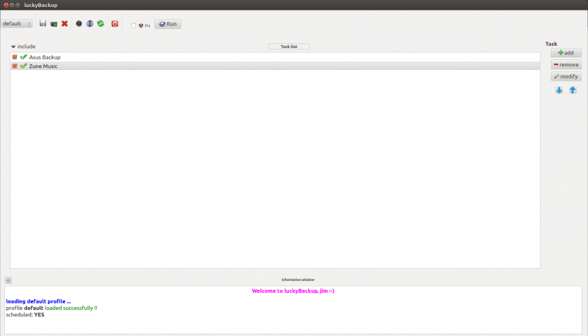

LuckyBackup, tus backups nunca fueron tan simples

Ya todos sabemos bien, porque así lo indica la teoría o bien porque lo hemos aprendido por las malas, que es muy importante realizar backups en forma periódica. Eso si, del dicho al hecho hay mucho trecho dice el refrán y así es como muchas veces quienes por sus conocimientos debieran ser los que más se ajustan a la teoría y realizan los backups son los que menos lo hacen, perdiendo así datos más que valiosos.
Una de las causas por las cuales no todos se ponen ‘manos a la obra’ en esto de los backups es porque hay que dedicarles algo de tiempo, y estar al tanto de determinados conceptos como lo que es un backup incremental. Pero más que nada, en el caso de Linux, porque hasta hace poco no contábamos con utilidades simples para estos menesteres y había que basarse en esa gran herramienta llamada rsync, la cual no obstante su genialidad tiene una curva de aprendizaje algo elevada.